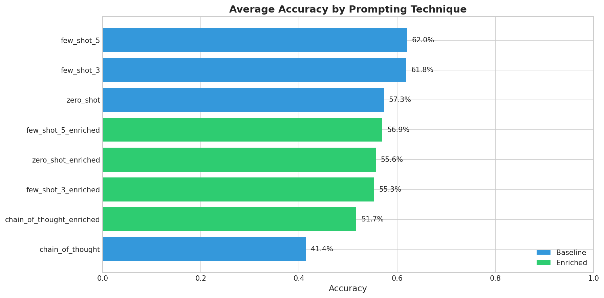
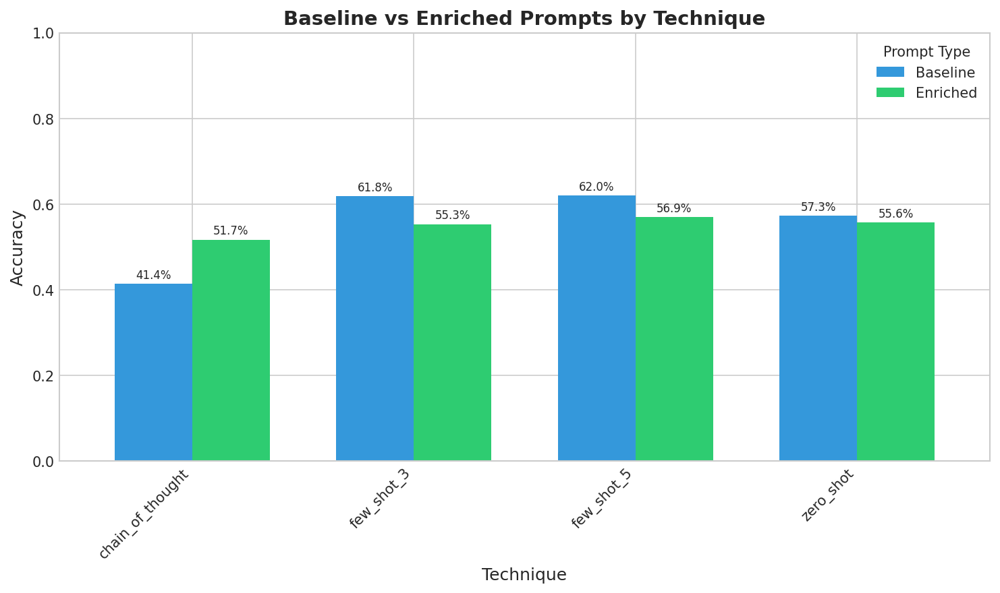
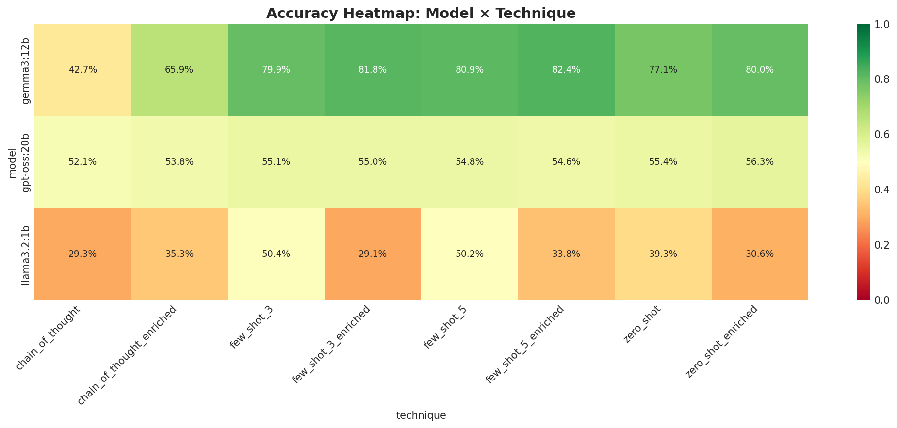
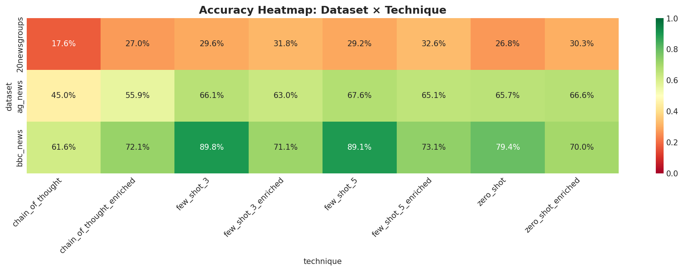
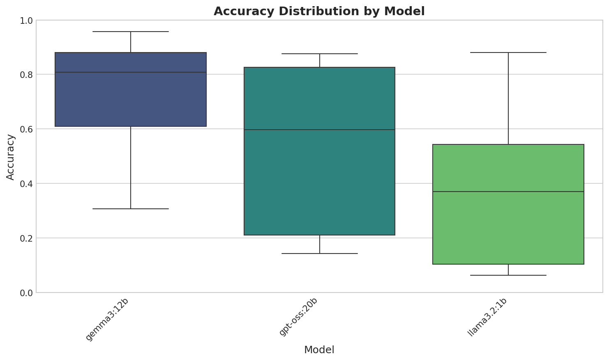
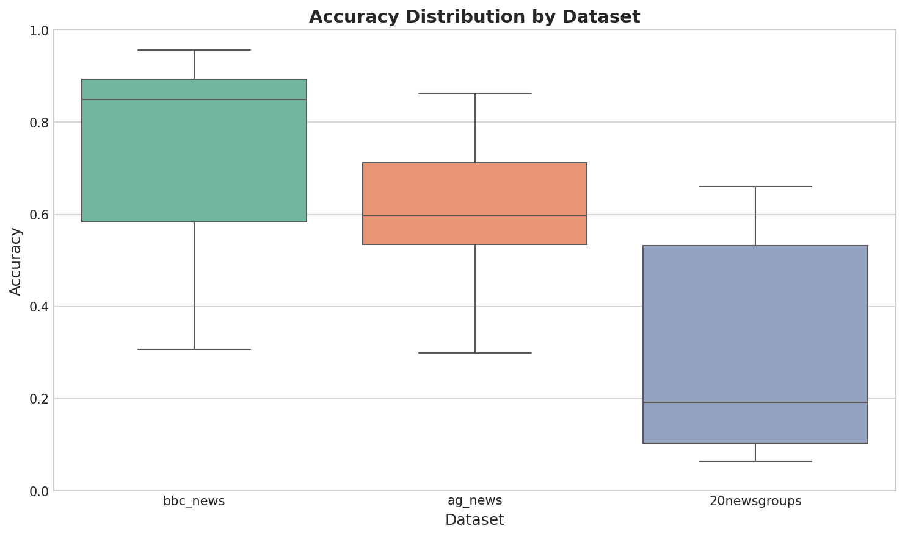
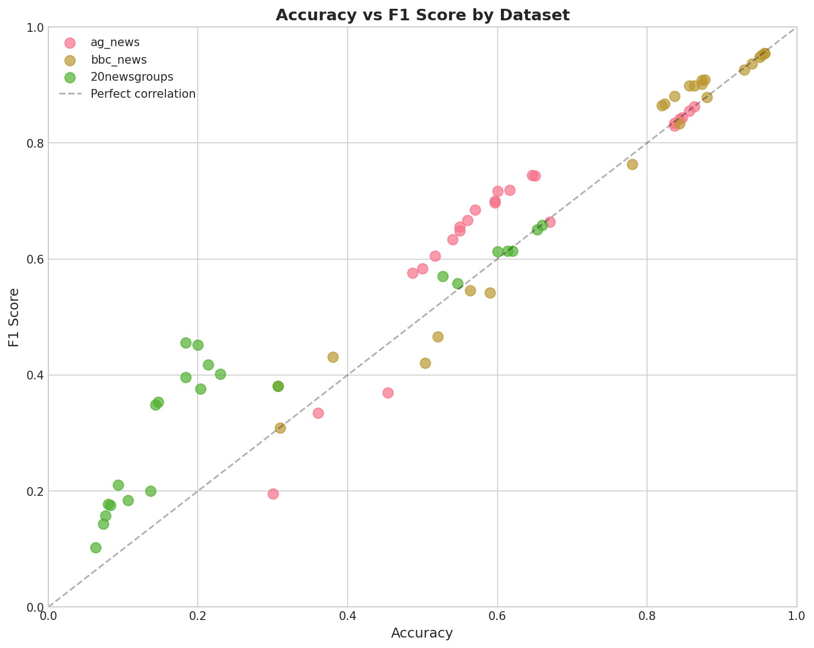
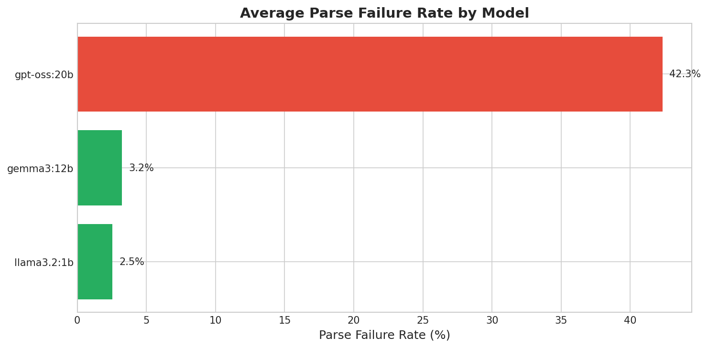
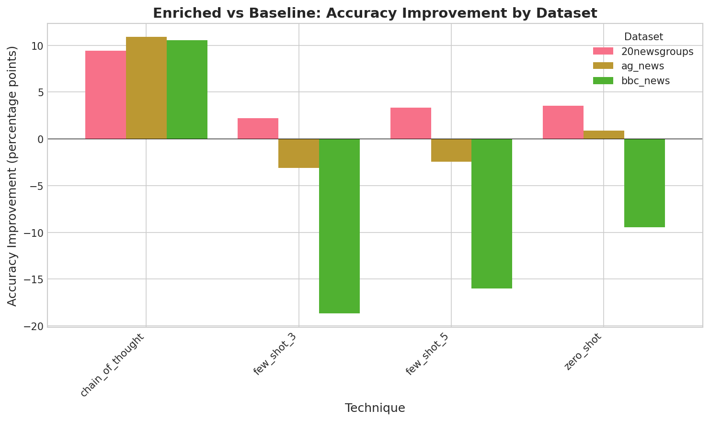

Models: gemma3:12b, llama3.2:1b, gpt-oss:20b
Datasets: ag_news, bbc_news, 20newsgroups
Techniques: zero_shot, few_shot_3, few_shot_5, chain_of_thought, zero_shot_enriched, few_shot_3_enriched, few_shot_5_enriched, chain_of_thought_enriched
| Rank | Dataset | Model | Technique | Accuracy | F1 Score |
|---|---|---|---|---|---|
| 1 | bbc_news | gemma3:12b | few_shot_5 | 95.7% | 95.4% |
| 2 | bbc_news | gemma3:12b | few_shot_5_enriched | 95.7% | 95.4% |
| 3 | bbc_news | gemma3:12b | zero_shot_enriched | 95.3% | 95.2% |
| 4 | bbc_news | gemma3:12b | few_shot_3_enriched | 95.0% | 94.8% |
| 5 | bbc_news | gemma3:12b | few_shot_3 | 94.0% | 93.7% |
| 6 | bbc_news | gemma3:12b | zero_shot | 93.0% | 92.6% |
| 7 | bbc_news | llama3.2:1b | few_shot_3 | 88.0% | 87.9% |
| 8 | bbc_news | gpt-oss:20b | few_shot_3_enriched | 87.7% | 91.0% |
| 9 | bbc_news | gpt-oss:20b | few_shot_3 | 87.3% | 90.1% |
| 10 | bbc_news | gpt-oss:20b | few_shot_5 | 87.3% | 90.8% |
| Technique | Baseline | Enriched | Improvement |
|---|---|---|---|
| zero_shot | 57.3% | 55.6% | ↓ -1.7% |
| few_shot_3 | 61.8% | 55.3% | ↓ -6.5% |
| few_shot_5 | 62.0% | 56.9% | ↓ -5.0% |
| chain_of_thought | 41.4% | 51.7% | ↑ +10.3% |








